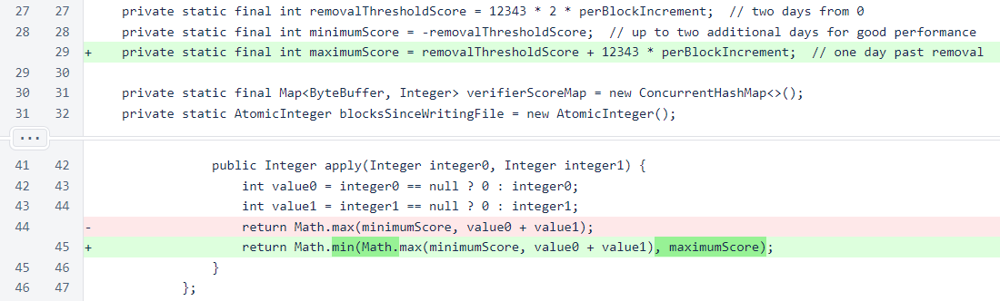
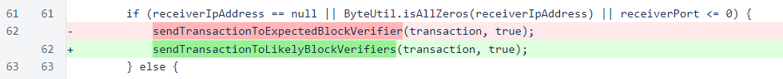
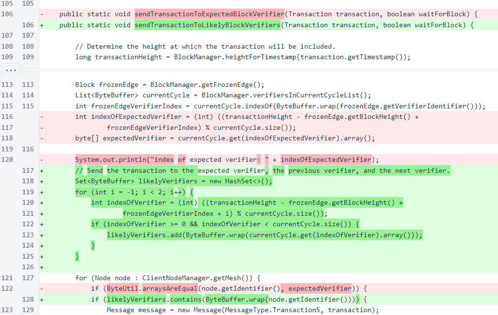
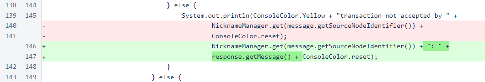
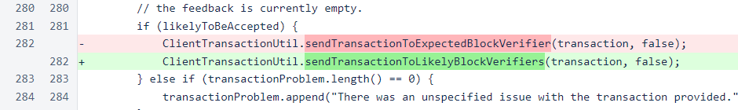

Nyzo version 546 (commit on GitHub) adds a maximum performance score and improves the process that the client and Micropay server use to send transactions to the cycle.
This version affects the verifier, the client, and the Micropay server. It is not an urgent update. The modifications in this version were made in the development and testing of the version-1 blockchain update, and they are being released now to allow the next version to be more focused.
In VerifierPerformanceManager, a maximum score is now enforced. Various verifier issues with connectedness have caused some verifiers to have exceptionally high scores on other verifiers from which recovery would be impractical. These scores are not useful in removing problematic verifiers. For practical purposes, they are noise in the system. Enforcing this maximum allows the noise to be cleared and allows the verifier-performance system to function more accurately and efficiently.
In ClientTransactionUtil, the sendTransactionToExpectedBlockVerifier() method has been replaced with sendTransactionToLikelyBlockVerifiers().
The sendTransactionToExpectedBlockVerifier() method sent a transaction to the single in-cycle verifier that was expected to verify the block in which the transaction's timestamp is contained. The replacement method uses the same logic to determine which verifier should verify the block that includes the transaction, but it also sends the transaction to the verifiers in the positions just before and just after the expected verifier in the cycle. This allows the transaction to be successfully incorporated in the blockchain even if a single verifier is added or removed between the time the transaction is sent and the time the block is produced.
When a transaction is not accepted by a verifier, the response from that verifier is now displayed.
The MicropayEndpoint class, used by the Micropay server, also uses the new method of sending transactions to likely verifiers.
